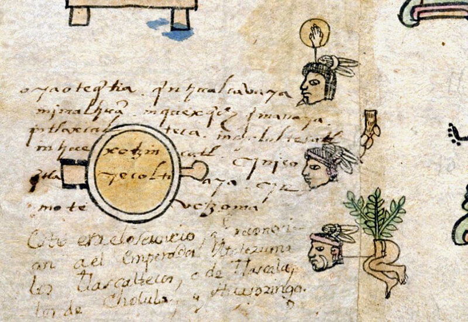
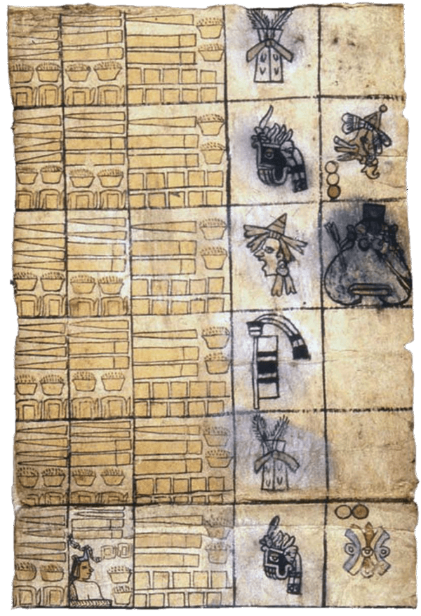

手抄本
帝国与贡品
许多人类社会都将其首都设想为“标志性的中心”。 这意味着这些首都不仅被认为是帝国的中心，而且也是“文明”世界的中心。 这些首都通常被认为是整个世界的缩影。 首都作为标志性的中心地位的一种体现方式是通过其建筑：建筑物和街道被分割成四到五个部分来代表基本方向（北、南、东、西和中心）。传达首都作为标志性的中心地位的另一种方式是通过可移动的物品，尤其是作为收到的上贡品。 通过将贡品从遥远的地方带入首都，首都对其帝国遥远范围的控制变得有据可循。 事实上，我们可以将帝国视为有生命力的，通过连接外围与中心（流向首都的贡品）以及中心与外围（为了占领并控制遥远的省份而从首都派遣的战士、总督和定居者的向外流动的联系而互相活跃流动）。

阿兹特克帝国地图。
《贡品清单》代表了这种活跃流动的空间结构。 它从阿兹特克帝国的边缘开始，在第1张正、反面上展示了一系列边境定居点。 在第2张正面，《贡品清单》转移到特斯科科湖和阿兹特克帝国中心的岛屿首府。 共有该岛屿两个城邦的符号（特诺奇蒂特兰和特拉特洛尔科）以及 15 世纪这些城市的四位统治者的名字符号（特诺奇蒂特兰的统治者伊兹柯阿特尔和阿哈雅卡特尔；特拉特洛尔科的统治者库阿乌特拉托拉 (Quauhtlatoa) 和莫基克斯 (Moquihuix)）都被绘画出来）。 这些人物上方，以及第2张正面部分继续描绘了特拉特洛尔科在 1474 年被阿哈雅卡特尔彻底征服后必须向特诺奇蒂特兰上贡的贡品清单。
接下来的几页（第3张正面至第16张反面）涵盖了特诺奇蒂特兰统治的各个上贡省份，地理范围不断扩大。 您会记得第2张正面的一部分以及第2张反面的全部内容，列出了特诺奇蒂特兰岛邻居特拉特洛尔科对特诺奇蒂特兰岛的贡品。 从3张正面开始，《贡品清单》穿过特斯科科湖的水域，描述首都周围的贡省。 当翻阅《贡品清单》书页时，逐渐离帝国的中心越来越远。 纳瓦人与许多美索美洲民族一样，将世界视为漂浮在大海上的一座岛屿，蓝色的海水与蓝色的天空融为一体。 因此，《贡品清单》以描述美索美洲水上边疆上的殖民地作为结尾绝非偶然：沿着太平洋海岸向南行驶到遥远的索科诺彻科（位于现在的危地马拉，第13张反面），然后向北列出了大西洋加勒比海沿岸的省份（第16张正面至第16张反面）。
那么，阿兹特克帝国跨越了美索美洲世界的水域界限。 鉴于我们对其他古代帝国的了解，阿兹特克人将其广阔的领土划分为五个区域，每个区域对应五个基本方向（北、南、东、西和中心），这并不奇怪。 这种由五部分组成的划分反映在《贡品清单》（以及从中复制的《门多萨手抄本》）的页面中。 约翰娜·布罗达 (Johanna Broda) 分析了几乎每个上贡省每年运送的武士战袍贡品。 这个分析显示了一个省份所在的位置与其所需的武士战袍数量之间存在明显的关联性。 这些位置和数量的关联性分为五个明显不同的组。 五个“中部”省份每年必须提供 8 种不同风格的武士战袍（总计 46 到 103 件服装，具体取决于省份）。 “北方”五省每年必须交付4至5种不同款式的武士战袍（总计42至62套）。 “西部”五个省份每年必须交付 1 至 3 款款式（总计 21 至 41 套战袍）。 “南方”七个省份每年必须提供 1 到 2 种不同款式（总共 1 到 2 套战袍）。 最后，“东部”五个省份每年还必须提供 1 到 2 种不同款式（但总共总是 2 套战袍）。 由于原材料的获取难易度，这种划分无法得到解释。 所有这些武士战袍都覆盖着色彩鲜艳的热带鸟类羽毛。 这些鸟类大多数生活在大西洋加勒比海沿岸，或南部远方的危地马拉的高地云雾缭绕的森林中。 然而，东部和南部省份的战袍需求相对较少，这些省份最容易获得绚丽的羽毛。 相反，墨西哥中部干燥高地的省份以及特诺奇蒂特兰周围的省份对武士战袍的需求量最大。 这意味着这些中部省份的居民首先必须交易未加工的羽毛，然后才能开始制作他们所需的武士服装。 因此，阿兹特克帝国的五部分划分（如对武士战袍的需求所揭示的那样）是一种象征性的划分，并且与不同地区原材料的实际获取难易度没有任何简单的联系。
然而，这并不是说地区资源和地理差异对阿兹特克人的贡品需求没有影响。许多贡品都与不同省份的生态多样性有关。太平洋沿岸的锡瓦特兰
(Ciuatlan) 省将提供红脊贝壳以及可可和棉花（在海岸炎热潮湿的气候中茁壮成长的植物；第9张反面）。瓦哈卡州的库埃斯特拉瓦坎省和科约拉帕 (Coyolapa) 省（第12张正面和第12张反面）将运送袋装胭脂虫红，这是一种从昆虫寄生虫中提取的红色染料，至今仍在这些地区繁盛。 遥远的索科诺彻科 (第13张正面) 会带来许多束色彩缤纷的鸟类羽毛，包括绿咬鹃（一种生活在该地区云雾森林中的鸟类）的长绿色羽毛，以及绿松石珠宝（从重要的矿脉中开采） 在该地区已有数百年历史。

来自锡瓦特兰省的红脊贝壳、可可和棉花（第9张反面）。
所有这些贡品，来自这五个伟大地区的财富，都被送回首都特诺奇蒂特兰。 这些财富的到来使首都成为一个微观世界，成为已知世界珍贵物品的容器。 我们上面提到，许多美索美洲民族认为世界是一个漂浮在浩瀚海洋中的岛屿。 特诺奇蒂特兰是一座漂浮在湖海上的岛城（特斯科科湖的湖水除了有淡水泉水供给的部分外，大部分都是咸的），这一事实使其作为微观世界“标志性的中心”的身份更加明显 。
但是，《贡品清单》对这个“标志性的”帝国的视觉描述有一些非常奇怪的地方。 矩阵的页面充满了物品和地点符号。 但对人物的描绘只出现在三页纸上。 第1张正面和反面显示了总督，第2张正面上显示了特诺奇蒂特兰和特拉特洛尔科的统治者。 贡品中唯一有人出现的地方是第11页反面，其中列出了特佩亚卡克要上贡的贡品。 那里的三个人头表明将被送往特诺奇蒂特兰的俘虏。 这些俘虏来自曾抵抗阿兹特克人征服的邦国：韦霍钦科、乔卢拉和特拉斯卡拉。 换句话说，在这个帝国的账本中从未描述过居住在阿兹特克帝国各省的臣民。 那些必须提供矩阵页面上显示的所有贡品的男人、女人和儿童在视觉上都缺席了。 何塞·路易斯·德·罗哈斯（José Luis de Rojas）和胡安·何塞·巴塔拉·罗萨多（Juan José Batalla Rosado）撰写了有关阿兹特克贡品名单的“隐藏数字”的文章。 需要多少妇女才能纺出特诺奇蒂特兰所需纺织品所需的布匹？ 当时有多少织布工参与其中？ 从各省运输贡品到首都需要多少搬运工？ 需要多少商人来向各省供应他们需要的非本地商品？ 我们上面讨论了非本地贡品的问题，即制作武士战袍所需的热带羽毛。 但武士战袍并不是唯一的例子。 即便最近的绿咬鹃生活在更南数百公里的地方，瓦哈卡州的库埃斯特拉瓦坎省还是需要成捆的绿咬鹃羽毛。

特佩亚卡克省中列出的来自韦霍钦科、乔卢拉和特拉斯卡拉的俘虏贡品（第11张反面）。
换句话说，《贡品清单》中记载的帝国愿景是理想化和简化的。 它的页面是从特诺奇蒂特兰的角度绘制的。 它的页面并不代表臣民，也不表明他们如何看待帝国。 目前还不清楚《贡品清单》的记录是份需求（表明向上贡省提出的要求）还是一份收据（表明哪些货物实际到达特诺奇蒂特兰）。 最后，《贡品清单》是静态的。 它的页面没有表明每个省份何时被征服或以其他方式合并，或者贡品需求如何随着时间的推移而变化。 幸运的是，其他类型的历史资料使我们能够回答其中一些问题，并更批判性地看待《贡品清单》的要求内容。中部地区和各省都存在历史文物的考古证据。 各省地区创建的书面记录也保存下来。 这些信息来源共同补充了我们对《贡品清单》的理解。
1978 年，墨西哥城市中心的挖掘工作发现了大神庙 (Templo Mayor) 的遗迹，这座大金字塔曾经是特诺奇蒂特兰（也是阿兹特克帝国）的仪式中心。 这一发现标志着为期五年的密集考古工作的开始（1978年至1982年由爱德华多·马托斯·蒙特祖玛 (Eduardo Matos Moctezuma) 领导）。 出土的文物清楚地表明了特诺奇蒂特兰作为标志性中心的性质。 大神庙的地基下埋藏着来自不同时空的珍贵物品：贝壳和珊瑚、墨西哥中部没有的宝石、鳄鱼、美洲豹和热带鸟类的骨骼，以及形成时期和古典时期的古代文物（属于特诺奇蒂特兰城建立前的几个世纪）。换句话说，《贡品清单》展示的向特诺奇蒂特兰进贡的物品确实来到了阿兹特克帝国的中心。其中一些物品随后被埋在特诺奇蒂特兰最重要的建筑中。
但到底有多少贡品抵达了这座浮在湖面上的标志性中心呢？《贡品清单》的记录是一份要求还是一份收据？ 杰拉多·古铁雷斯 (Gerardo Gutiérrez)、薇奧拉·寇尼希 (Viola König) 和巴尔达沙·布里托 (Baltazar Brito) 的精彩研究使我们能够解决这个问题。他们的工作重点是太平洋沿岸的贡品特拉帕省 (Tlapa)（位于今格雷罗州）。 十六世纪中叶的某个时候，该地区的原住民在一本长长的折叠手抄本里记录了他们的历史。 该抄本的一面重点介绍了该地区从 1429 年开始到 1564 年结束的政治历史叙述。另一面重点介绍了特拉帕每年向阿兹特克帝国缴纳贡品的记录，展示了格雷罗州的贡品要求是如何随着时间的推移而增加（从 1486 年该地区首次被征服开始）。 古铁雷斯、寇尼希和布里托将这段经济史称为《特拉帕上贡记录》。 这是一个非常有价值的资料，因为它提供了从一个省的角度讲述阿兹特克帝国经济史的视角。 与静态的、未注明日期的《贡品清单》页面不同，《特拉帕上贡记录》显示了贡品需求如何随着时间的推移而变化。

《特拉帕上贡记录》（被称为《阿佐尤手抄本II》(Codex Azoyu II) 的部分）中显示贡品的页面。
《特拉帕上贡记录》还使我们能够评估帝国中心文件中记录的阿兹特克进贡要求的观点。 古铁雷斯、寇尼希和布里托将《特拉帕贡品记录》中 1520 年的贡品统计与其他三份 16 世纪文献进行了比较：《贡品清单》、《门多萨手抄本》以及一份名为《有关印第安人向蒙特祖玛进贡的信息》(Información sobre los tributos que los indios pagaban a Moctezuma) (1554 年) 的字母记录。 这种比较揭示了许多有趣的事情。 这四个账本中的每一个都包含略有不同的项目。 例如，《特拉帕上贡记录》中只列出了金粉、金片和织布。 它没有提及《贡品清单》和《门多萨手抄本》中列出的武士战袍和葫芦碗。 就布匹需求量而言，《特拉帕上贡记录》与《贡品清单》中的说法相符：每年有 6400 件布匹被送往特诺奇蒂特兰。 相比之下，《信息》称每年仅发送 3200 件。 想要理解《门多萨手抄本》的内容更为复杂。 根据《门多萨手抄本》的图像记录，每年上贡 6400 件布匹，这与《特拉帕上贡记录》和《贡品清单》一致。 然而，根据《门多萨手抄本》的字母注释记录，上贡的布匹数量是其十倍：64000 件。
古铁雷斯、寇尼希和布里托还使用 16 世纪的价格，将所描述物品的价值转换为比索，对这四个账本进行了比较。 由于每个账本列出的物品和数额略有不同，这种换算提供了比较贡品总值的粗略方法。 根据这些计算，《特拉帕上贡记录》中列出的物品价值总计 13768 比索，《贡品清单》 12020 比索，《信息》12080 比索，《门多萨手抄本》图片部分是 12100 比索，《门多萨手抄本》的注释部分是 69700 比索。 换句话说，尽管所有四个来源都列出了所需贡品的不同组合，但四个中的三个或多或少都对 1520 年左右特拉帕所要求的贡品价值记载大致相同。那么，所有这些表明， 《贡品清单》相当准确地描述了阿兹特克人向他们的上贡省索取和收到的贡品。 它还表明，当《贡品清单》被重新抄写为《门多萨手抄本》的一部分时，贡品总额被夸大了。上面我们提到，对于特拉帕来说，《门多萨手抄本》中的贡品要求图像与《门多萨手抄本》中的相同：不同之处在于《门多萨手抄本》中的字母注解所表述的内容。 然而，与《贡品清单》中显示的内容相比，《门多萨手抄本》的其他页面中的贡品图像要求本身就有所增加，即绘制了更多的物品。
不幸的是，有关各个省份所写的贡品要求的文件一般都没有保存下来。 特拉帕是一个非常不寻常的案例。评估阿兹特克人对各省贡品需求的另一种方法是考古研究。 伊丽莎白·布鲁姆菲尔 (Elizabeth Brumfiel)、玛丽·霍奇 (Mary Hodge) 和迈克尔·E·史密斯 (Michael E. Smith) 的发掘和地面勘察的重点不是特诺奇蒂特兰首都，而是核心以外的社区，这些社区是为了提供贡品而建造的。 这些发掘为许多重要问题提供了答案。 例如，某个地区并入帝国后，其陶土纺纱工具的数量会发生什么变化？ 用于食品生产的陶器发生了哪些变化？ 我们如何将这些变化与纺织品新的上贡需求联系起来？ 与农业生产相比，被征服省份的手工业生产有何变化？ 帝国中部制造的哪些物品开始出口到各个省？ 这些变化揭示了臣民如何试图抵制阿兹特克人的贡品要求？ 考古学提供了一种额外的（尽管具有挑战性的）方法来评估以特诺奇蒂特兰为中心的文献（如《贡品清单》）所提出的主张。
总而言之，《贡品清单》呈现了阿兹特克帝国的理想化愿景。 它帮助我们通过阿兹特克人的世界观和他们珍视的物品更好地了解他们。 它将阿兹特克帝国的各省划分为一个由五部分组成的宇宙整体，并从边界（第1张正、反面）移动到中心（第2张正、反面），然后再次移动到已知世界的水边（第3张正面至第16张反面） 。 但《贡品清单》也以另一种方式被理想化。 被征服的臣民，即制造和运输贡品的人从未被展示出来。 除了前几页中的总督和统治者之外，《贡品清单》中唯一的人类都是俘虏，他们本身就是贡品。 换句话说，《贡品清单》似乎声称贡品的生产和交付不需要人类的劳动力。 然而，我们对阿兹特克帝国的理解不应仅限于这种对毫不费力、无人经济生产的“神奇”或“神秘”描述。 通过将《贡品清单》与其他文献和考古证据进行比较，我们可以更好地理解其内容、缺失及其含义。通过查看其他信息来源，我们可以更好地了解征服对附属社区的影响。生活在被征服省份的人们如何书写他们的征服经历？ 为了制作阿兹特克人所需的贡品，日常生活是如何改变的？ 阿兹特克对其帝国的看法被这些省份的臣民接受还是拒绝？
页面目录

帝国边境驻军
01页
第1张正面
帝国边境驻军
02页
第1张反面

特拉特洛尔科
的贡品
03页
第2张正面

佩特拉卡勒科省
的贡品
04页
第2张反面

阿科瓦坎省
的贡品
05页
第3张正面

库阿纳瓦科省
的贡品
06页
第3张反面

瓦特佩克省
的贡品
07页
第4张正面

夸奥蒂特兰省
的贡品
08页
第4张反面
维普奇特兰省
的贡品
09页
第5张正面

阿托托尼尔科省
的贡品
10页
第5张反面

希洛特佩克省
的贡品
11页
第6张正面

夸瓦坎省
的贡品
12页
第6张反面

托路坎省
的贡品
13页
第7张正面

奥奎兰省
的贡品
14页
第7张反面


马琳纳科省
的贡品
索科蒂特兰省
的贡品
15页
第8张正面

特拉彻科省
的贡品
16页
第8张反面

特佩夸奎尔科省
的贡品
17页
第9张正面

锡瓦特兰省
的贡品
18页
第9张反面

特拉潘省
的贡品
19页
第10张正面


特拉科扎乌蒂特兰省
的贡品
奎阿乌特奥潘省
的贡品
尤阿特佩克省
的贡品
20页
第10张反面

查尔科省
的贡品
21页
第11张正面

特佩亚卡克省
的贡品
22页
第11张反面

库埃斯特拉瓦坎省
的贡品
23页
第12张正面
科尤拉潘省
的贡品
24页
第12张反面

索科诺彻科省
的贡品
25页
第13张正面

夸乌托彻科省
的贡品
26页
第13张反面

奎特拉斯特兰省
的贡品
27页
第14张正面

特拉帕科颜省
的贡品
28页
第14张反面

特拉特拉乌奎特佩克省
的贡品
29页
第15张正面

托彻潘省
的贡品
30页
第15张反面

阿特兰省
的贡品
31页
第16张正面

兹克阿克省
的贡品